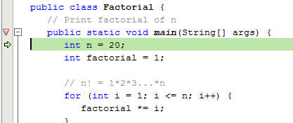
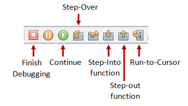
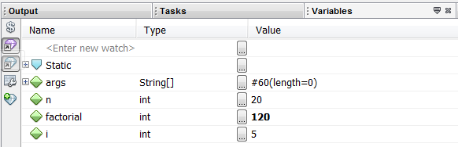

Apache NetBeans (@ https://netbeans.apache.org/front/main/index.html) is an open-source Integrated Development Environment (IDE). NetBeans began in 1996 as a Java IDE student project at Charles University in Prague. In 1999, Sun Microsystems acquired NetBeans. In 2010, Oracle acquired Sun (and thus NetBeans). In 2016, Oracle submitted NetBeans to the Apache Software Foundation.
Compared with its rival Eclipse (http://www.elicpse.org) (both are open-source, so I don't know what are they competing for?), NetBeans provides seamless support for Java AWT/Swing, Java ME mobility pack, Java EE, and bundled with an excellent profiler for performance tuning.
How to Install NetBeans 21 (2024)
Install Platform-Independent NetBeans on Windows/macOS
Step 0 Install JDK: To use NetBeans for Java programming, you need to first install Java Development Kit (JDK). See "JDK - How to Install".
Step 1 Download: Download NetBeans from "https://netbeans.apache.org/front/main/index.html" ⇒ Download. There are many "bundles" available. I suggest you choose the platform independent ZIP version (e.g., "netbeans-21-bin.zip" 95MB). NetBeans is written in Java, hence, it is platform independent.
Step 2 Unzip: Unzip the downloaded file into a directory of your choice.
Install NetBeans on Ubuntu Linux (to check)
To use NetBeans for Java programming, you need to first install JDK. Read "How to install JDK on Ubuntu".
To install NetBeans:
- Download NetBeans from http://netbeans.org/downloads/. Choose platform "Linux (x86/x64)" ⇒ "Java SE". You shall receive a
shfile (e.g., "netbeans-7.x-ml-javase-linux.sh") in "~/Downloads". - Set the downloaded
shfile to executable and run theshfile. Open a Terminal:$ cd ~/Downloads $ chmod a+x netbeans-7.x-ml-javase-linux.sh // Set to executable for all (a+x) $ ./netbeans-7.x-ml-javase-linux.sh // Run
Follow the instructions to install NetBeans.
To start NetBeans, run the script "netbeans" in the NetBeans' bin directory:
$ cd netbeans-bin-directory $ ./netbeans
First Java Program
Reference: NetBeans Java Quick Start Tutorial @ https://netbeans.apache.org/tutorial/main/kb/docs/java/quickstart/.
Step 0: Launch NetBeans
Launch NetBeans by running netbeans.exe or netbeans64.exe under "bin". If the "Start Page" appears, close it by clicking the "cross" button next to the "Start Page" title.
Step 1: Create a New Project
For each Java application, you need to create a "project" to keep all the source files, classes and relevant resources.
- From "File" menu ⇒ Choose "New Project...".
- The "Choose Project" dialog pops up ⇒ Under "Categories", choose "Java with Maven" ⇒ Under "Projects", choose "Java Application" ⇒ "Next".
- The "Name and Location" dialog pops up ⇒ Under "Project Name", enter "
FirstJavaProject" ⇒ In "Project Location", select a suitable directory to save your works ⇒ In Group Id: enter "com.nowhere" ⇒ Finish. - A Hello-world program
FirstJavaProject.javais automatically created. You can right-click on the source file ⇒ Run File.
Step 2: Write a Hello-world Java Program
- Right-click on package "
com.nowhere.firstjavaproject" ⇒ New ⇒ Java Class ⇒ In "Class Name", enter "Hello" ⇒ "Finish". - The source file "
Hello.java" appears in the editor panel. Enter the following codes:package com.nowhere.firstjavaproject; public class Hello { public static void main(String[] args) { System.out.println("hello world, form NetBeans!"); } }
Step 3: Compile & Execute
There is no need to "compile" the source code in NetBeans explicitly, as NetBeans performs the so-called incremental compilation (i.e., the source statement is compiled as and when it is entered).
You need to remove the following line from Maven configuration file "pom.xml", which set the main class of the project.
<exec.mainClass>com.nowhere.firstjavaproject.FirstJavaProject</exec.mainClass>
To run the program, right-click anywhere in the source (or from the "Run" menu) ⇒ Run File. Observe the output on the output console.
Notes:
- You should create a NEW Java project for EACH of your Java application.
- Nonetheless, NetBeans allows you to keep more than one programs in a project, which is handy for writing toy programs (such as your tutorial exercises). To run a particular program, open and right-click on the source file ⇒ Run File.
Correcting Syntax Error
NetBeans performs incremented compilation, as and when a source line is entered. It marked a source line with syntax error with a RED CROSS. Point your cursor at the RED CROSS to view the error message.
You CANNOT RUN the program if there is any syntax error (marked by a RED CROSS before the filename). Correct all the syntax errors; and RUN the program.
[TODO] Diagram
HINTS: In some cases, NetBeans shows a ORANGE LIGHT-BULB (for HINTS) next to the ERROR RED-CROSS (Line 5 in the above diagram). You can click on the LIGHT-BULB to get a list of HINTS to resolve this particular error, which may or may not work!
SYNTAX WARNING: marked by a orange triangular exclamation sign. Unlike errors, warnings may or may not cause problems. Try to fix these warnings as well. But you can RUN your program with warnings.
Read the NetBeans Documentation
Goto "Help" menu ⇒ Start Page.
Debugging Program in NetBeans
Step 0: Write a Java Program
The following program computes and prints the factorial of n (=1*2*3*...*n). The program, however, has a logical error and produce a wrong answer for n=20 ("The Factorial of 20 is -2102132736" - a negative number?!).
/** Compute the factorial of n */
public class Factorial {
// Print factorial of n
public static void main(String[] args) {
int n = 20;
int factorial = 1;
// n! = 1*2*3...*n
for (int i = 1; i <= n; i++) {
factorial *= i;
}
System.out.println("The Factorial of " + n + " is " + factorial);
}
}Let us use the graphic debugger to debug the program.
Step 1: Set an initial Breakpoint
A breakpoint suspends program execution for you to examine the internal states of the program. Before starting the debugger, you need to set at least one breakpoint to suspend the execution inside the program. Set a breakpoint at main() method by clicking on the left-margin of the line containing main(). A red circle or an inverted Triangle appears in the left-margin indicating a breakpoint is set at that line.
Step 2: Start Debugging
Right click anywhere on the source code ⇒ "Debug File". The program begins execution but suspends its operation at the breakpoint, i.e., the main() method.
As illustrated in the following diagram, the highlighted line (also pointed to by a green arrow) indicates the statement to be executed in the next step.
Step 3: Step-Over and Watch the Variables and Outputs
Click the "Step Over" button (or select "Step Over" in "Debug" menu) to single-step thru your program. At each of the step, examine the value of the variables (in the "Variable" panel) and the outputs produced by your program (in the "Output" Panel), if any. You can also place your cursor at any variable to inspect the content of the variable.
 Single-stepping thru the program and watching the values of internal variables and the outputs produced is the ultimate mean in debugging programs - because it is exactly how the computer runs your program!
Step 4: Breakpoint, Run-To-Cursor, Continue and Finish
As mentioned, a breakpoint suspends program execution and let you examine the internal states of the program. To set a breakpoint on a particular statement, click on the left-margin of that line (or select "Toggle Breakpoint" from "Run" menu).
"Continue" resumes the program execution, up to the next breakpoint, or till the end of the program.
"Single-step" thru a loop with a large count is time-consuming. You could set a breakpoint at the statement immediately outside the loop (e.g., Line 11 of the above program), and issue "Continue" to complete the loop.
Alternatively, you can place the cursor on a particular statement, and issue "Run-To-Cursor" to resume execution up to the line.
"Finish" ends the debugging session. Always terminate your current debugging session using "Finish" or "Continue" till the end of the program.
Other Debugger's Features:
Modify the Value of a Variable
You can modify the value of a variable by entering a new value in the "Variable" panel. This is handy for temporarily modifying the behavior of a program, without changing the source code.
Step-Into and Step-Out
To debug a method, you need to use "Step-Into" to step into the first statement of the method. You could use "Step-Out" to return back to the caller, anywhere within the method. Alternatively, you could set a breakpoint inside a method.
NetBeans - Tips & Tricks
General Usage
These are the features that I find to be most useful in NetBeans:
- Maximizing Window (double-click): You can double-click on the "header" of any panel to maximize that particular panel, and double-click again to restore it back. This is particularly useful for editing source code in full panel.
- Code Auto-Complete (or Intelli-Sense) (ctrl-space): Enter a partial statement (e.g., Sys) and press control-space to activate the auto-complete, which displays all the available choices.
- Javadoc (ctrl-space, alt-F1): Place the cursor on a method or class, and press ctrl-space to view the javadoc; or right-click ⇒ Show Javadoc (alt-F1) to open it on a browser.
- Code Shorthand (tab): For example, you can enter "
sout" and press TAB for "System.out.println"; "psvm" for "public static void main(String[] args) { }" or "fori" + tab for a for-loop. To view and configure code template, choose "Tools" menu ⇒ "Options" ⇒ "Editor" ⇒ "Code Templates". - Formatting Source Code (alt-shift-f): Right-click on the source (or from the "Source" menu) ⇒ Choose "Format". NetBeans will layout your source codes with the proper indents and format. To configure the formatting, choose "Tools" menu ⇒ "Options" ⇒ "Editor" ⇒ "Formatting".
You can also select the section of codes to be formatted, instead of the entire file. - Hints for Correcting Syntax Error: If there is a syntax error on a statement, a red mark will show up on the left-margin on that statement. You could click on the "light bulb" to display the error message, and also select from the available hints for correcting that syntax error.
- Rename (Refactor) (ctrl-r): To rename a variable, place the cursor on that variable, right-click ⇒ "Refactor" ⇒ "Rename" ⇒ Enter the new name. All the appearances of that variables in the project will be renamed.
- Small Programs: You can keep many small toy programs (with
main()) in one Java project instead of create a new project for each small program. To run the desired program, on the "editor" panel ⇒ right-click ⇒ "Run File". - Source Toggle Comment: To temporarily comment-off a block of codes, choose "Source" ⇒ "Toggle Comment".
- Error Message Hyperlink: Click on an error message will hyperlink to the corresponding source statement.
- Command-Line Arguments: To provide command-line arguments to your Java program in NetBeans, right-click on the "project" ⇒ "Set as Main Project" ⇒ "Set Configurations" ⇒ "Customize..." ⇒ "Run" ⇒ select the "Main" class ⇒ type your command-line arguments inside the "Arguments" field ⇒ choose "Run" menu ⇒ "Run Main Project".
- Line Numbers: To show the line numbers, right-click on the left-margin ⇒ "Show Line Numbers".
- Changing Font Face and Size: Tools ⇒ Options ⇒ Fonts & Colors ⇒ In "Category", select "Default" ⇒ In "Font", choose the font face and size.
- Resetting Window View: If you mess up the window view (e.g., you accidentally close a window and cannot find it anymore), you can reset the view via "Window" menu ⇒ "Reset Windows".
- Code Templates: For example, when you create a new Java class, NetBeans retrieves the initial contents from the "Java Class" code template. To configure code templates, select "Tools" menu ⇒ "Templates" ⇒ Choose the desired template ⇒ "Open in Editor". To set a value of a variable used in the all the code templates (e.g.,
$User), select "Tools" menu ⇒ "Templates" ⇒ "Settings". - Displaying Chinese Character: Need to choose a font that support chinese character display, such as "Monospace", in Tools ⇒ Options ⇒ Fonts & Colors ⇒ Syntax ⇒ default.
- Changing the JDK Location: The NetBeans configuration file is located at "
etc\netbeans.conf". Edit the directive "netbeans_jdkhome". - Let me know if you have more tips to be included here.
Java Application Development
- Choosing the JDK version for your program: Right-click on your project ⇒ "Properties" ⇒ "Source" node ⇒ You can select the JDK level of your project in pull-down menu "Source/Binary Format".
- Enabling JDK 7 support: If JDK 7 is already installed in your system, right-click on your Project ⇒ "Properties" ⇒ "Source" node ⇒ "Source/Binary Format" ⇒ Select "JDK 7". Also check "Libraries" ⇒ Java Platform ⇒ JDK 7.
If JDK 7 is not installed/configured, install JDK 7. Add JDK 7 support to NetBeans via "Tool" menu ⇒ "Java Platforms" ⇒ "Add Platform...". - Choosing Default Charset: Right-click on your project ⇒ "Properties" ⇒ "Source" node ⇒ "Encoding" ⇒ choose your desired charset for the text-file I/O from the pull-down menu.
- Enabling Unicode Support for File Encoding: Right-click on your project ⇒ "Properties" ⇒ "Source" node ⇒ "Encoding" ⇒ choose your Unicode encoding (e.g., UTF-8, UTF-16, UTF-16LE, UTF-16GE) for the text-file I/O.
- To include Javadoc/Source: Use "Library Manager" (select the "Tools" menu ⇒ "Libraries"); or "Java Platform Manager" (select "Tools" menu ⇒ "Java Platforms")
- Adding External JAR files & Native Libraries ("
.dll", ".lib", ".a", ".so"): Many external Java packages (such as JOGL, Java3D, JAMA, etc) are available to extend the functions of JDK. These packages typically provide a "lib" directory containing JAR files (".jar") (Java Archive - a single-file package of Java classes) and native libraries (".dll", ".lib" for windows, ".a", ".so" for Linux and Mac).
To include an external JAR file (".jar") into a project: Expand the project node ⇒ Right-click on "Libraries" ⇒ "Add JAR/Folder..." ⇒ Select the desired JAR file or the folder containing the classes.
If the external package contains many JAR files, you could create a user library to contain all the JAR files, and add the library to all the projects that required these JAR files. From "Tools" menu ⇒ "Libraries" ⇒ "New Library..." ⇒ Enter a library name ⇒ Use "Add JAR/Folder..." to add JAR files into this library.
Many JAR files come with native libraries in the form of ".dll", ".lib" (for Windows) and ".a", ".so" for Linux/Mac. The directory path of these libraries must be included in JRE's property "java.library.path". This can be done via right-click the project ⇒ Set Configuration ⇒ Customize... ⇒ Run ⇒ In "VM options", enter "-Djava.library.path=xxx", wherexxxis path of the native libraries.
Notes: The JAR files must be included in theCLASSPATH. The native library directories must be included in JRE's property "java.library.path", which normally but not necessarily includes all the paths from thePATHenvironment variable. Read "External JAR files and Native Libraries".
Writing Java GUI (AWT/Swing) Application in NetBeans
Step 1: Create a New Java Project
- Launch NetBeans ⇒ File ⇒ New Project...
- Under "Categories", choose "Java with Maven" ⇒ Under "Projects", choose "Java Application" ⇒ Next.
- In "Project Name", enter "
FirstJavaGUI" ⇒ Choose a suitable directory for your "Project Location" ⇒ Uncheck the "Create Main class" box ⇒ Finish.
Step 2: Write a Java File "JFrame Form"
- Right-click on the package "
com.nowhere.FirstJavaGUI" ⇒ New ⇒ Other ⇒ In Categories, select Swing GUI form. In "File Types", select "JFrame Form" ⇒ Next - In "Class Name", enter "
SwingCounter" ⇒ Finish. - Create the GUI Components visually:
- From the "Platte" panel ⇒ "Swing Controls" ⇒ Drag and drop a "
Label", "TextField", and "Button" into the design panel. - Click on the "
jLabel1" ⇒ In the "Properties" panel, enter "Count" in "text" (You can also single-click on thejLabel1to change the text). Right-click on thejLabel1⇒ Change Variable Name ⇒ In "New Name", enter "lblCount". - Similarly, for "
jTextField1" ⇒ Change the "text" to 0, and change the "Variable Name" to "tfCount" ⇒ Resize the text field if necessary. - For "
jButton1" ⇒ Change the "text" to "Count", and change the "Variable Name" to "btnCount".
- From the "Platte" panel ⇒ "Swing Controls" ⇒ Drag and drop a "
- Write the event handler for the button by double-clicking the button and enter the following codes:
private void btnCountActionPerformed(java.awt.event.ActionEvent evt) { int count = Integer.parseInt(tfCount.getText()); tfCount.setText(++count + ""); }
Step 3: Compile & Execute
Right-click the source and select "Run File".
Step 4: Study the Generated Source Code
Expand the "Generated Code" and study how the GUI builder declare, allocate and initialize the GUI Components in the initComponents(). Note how the JButton registers an ActionEvent listener and how an inner class is used as the listener and provide the event handler actionPerformed(). Also notice that the main() method uses a Swing's worker to run the GUI on the Event-Dispatcher thread, instead of the main thread, for thread-safe operations.
package com.nowhere.firstjavagui;
public class SwingCounter extends javax.swing.JFrame {
// Constructor to setup the UI via initComponents()
public SwingCounter() {
initComponents();
}
private void initComponents() {
lblCount = new javax.swing.JLabel();
tfCount = new javax.swing.JTextField();
btnCount = new javax.swing.JButton();
setDefaultCloseOperation(javax.swing.WindowConstants.EXIT_ON_CLOSE);
lblCount.setText("Counter");
tfCount.setText("0");
btnCount.setText("Count");
// Create an anonymous inner as the listener for the ActionEvent fired by btnCount
btnCount.addActionListener(new java.awt.event.ActionListener() {
public void actionPerformed(java.awt.event.ActionEvent evt) {
btnCountActionPerformed(evt);
}
});
// Laying out the components
// ......
pack();
}
// ActionEvent handler for btnCount
private void btnCountActionPerformed(java.awt.event.ActionEvent evt) {
int count = Integer.parseInt(tfCount.getText());
tfCount.setText(++count + "");
}
public static void main(String args[]) {
// Setup the Look and Feel
// .....
// Run the constructor on the Event-Dispatcher Thread for thread-safe
java.awt.EventQueue.invokeLater(new Runnable() {
public void run() {
new SwingCounter().setVisible(true);
}
});
}
// private variables
private javax.swing.JButton btnCount;
private javax.swing.JLabel lblCount;
private javax.swing.JTextField tfCount;
}
REFERENCES & RESOURCES
- Apache NetBeans mother site @ https://netbeans.apache.org/front/main/index.html.
- NetBeans "Java SE Learning Trail" @ https://netbeans.apache.org/tutorial/main/kb/docs/java/.